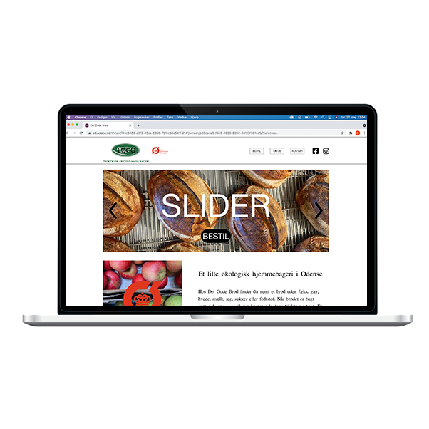
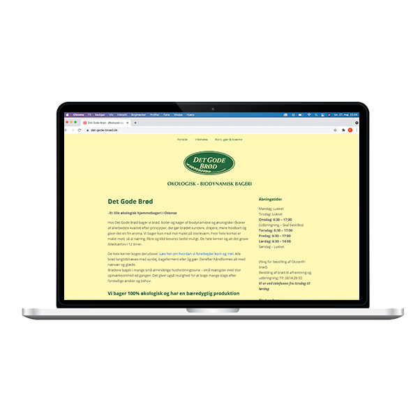
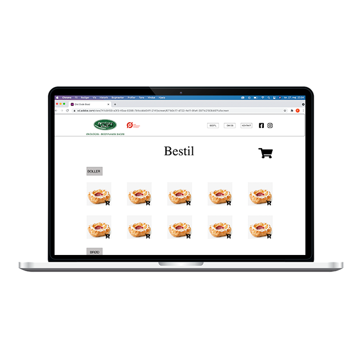

Det Gode Brød
www.det-gode-broed.dk
Adobe XD
Jeg havde fået til opgave at lave et redesign af www.det-gode-broed.dk. Jeg har udviklet et mockup i Adobe XD.
For mig handlede det om at sætte fokus på Det gode brøds kerneværdier. Det gode brød er begyndt at levere brød ud til private. Jeg har derfor haft fokus på at øge opmærksomheden på det nye tiltag. Call To Action knapper er placeret flere steder på siden, samt en ny og overskuelig bestilingsfunktion.
Står du og mangler en ung fyr med styr på Adobe XD og redesign? Så klik på knappen under, og kontakt mig.
Kontakt

